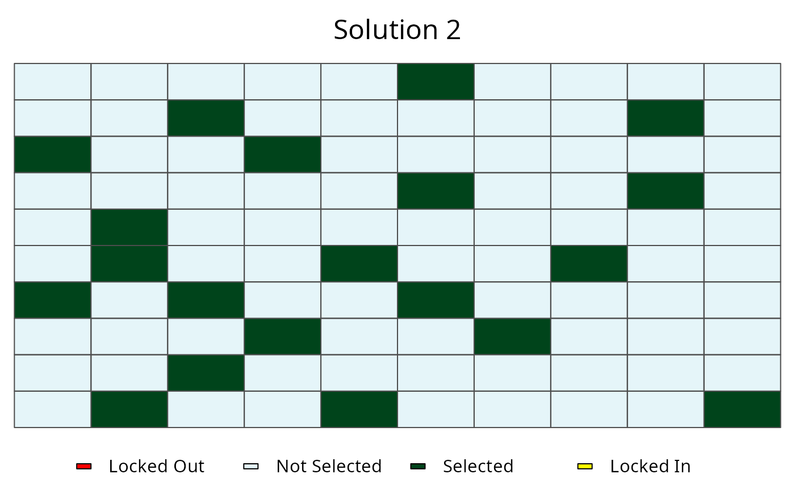
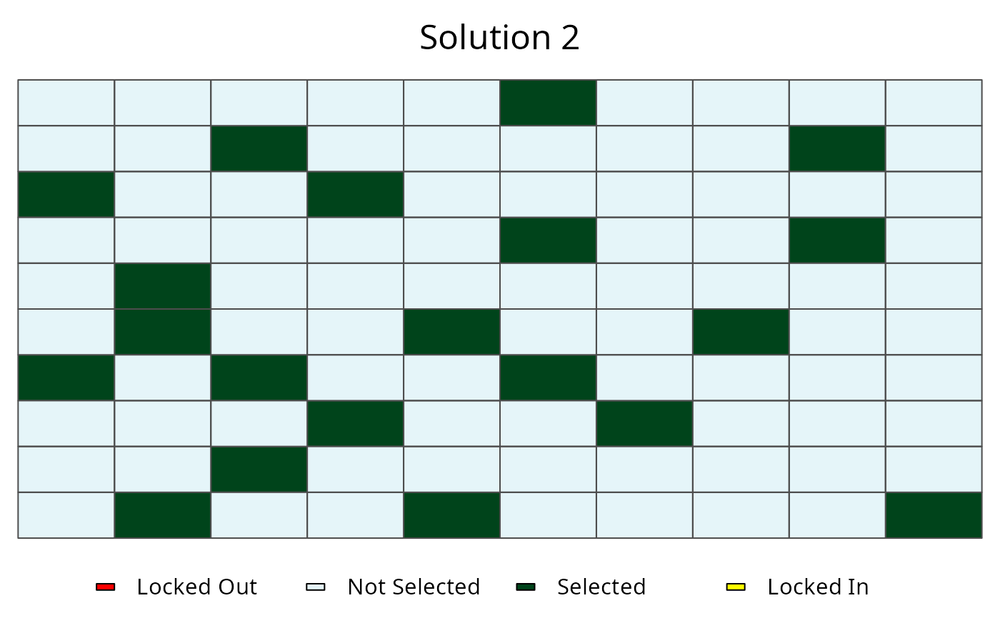

This function plots the solutions contained in RapSolved()
objects. It can be used to show a single solution, or the the selection
frequencies of planning units contained in a single RapSolved()
object. Additionally, two RapSolved() objects can be supplied to
plot the differences between them.
# S4 method for RapSolved,numeric
plot(x, y, basemap = "none",
pu.color.palette = c("#e5f5f9", "#00441b", "#FFFF00", "#FF0000"), alpha =
ifelse(basemap == "none", 1, 0.7), grayscale = FALSE, main = NULL,
force.reset = FALSE)
# S4 method for RapSolved,missing
plot(x, y, basemap = "none",
pu.color.palette = c("PuBu", "#FFFF00", "#FF0000"),
alpha = ifelse(basemap == "none", 1, 0.7),
grayscale = FALSE, main = NULL,
force.reset = FALSE)
# S4 method for RapSolved,RapSolved
plot(x, y, i = NULL, j = i,
basemap = "none",
pu.color.palette = ifelse(is.null(i), c("RdYlBu", "#FFFF00",
"#FF0000"), "Accent"),
alpha = ifelse(basemap == "none", 1, 0.7),
grayscale = FALSE, main = NULL, force.reset = FALSE)Arguments
- x
RapSolved()object.- y
Available inputs are:
NULLto plot selection frequencies,numericnumber to plot a specific solution,0to plot the best solution, and aRapSolved()object to plot differences in solutions between objects. Defaults toNULL.- basemap
characterobject indicating the type of basemap to use (seebasemap()). Valid options include"none","roadmap","mobile","satellite","terrain","hybrid","mapmaker-roadmap","mapmaker-hybrid". Defaults to"none"such that no basemap is shown.- pu.color.palette
charactervector of colors to indicate planning unit statuses. If plotting selection frequencies (i.e.,j = NULL), then defaults to ac("PuBu", "#FFFF00", "#FF0000"). Here, the first element corresponds to a color palette (perRColorBrewer::brewer.pal()) and the last two elements indicate the colors for locked in and locked out planning units. Otherwise, the parameter defaults to acharactervector ofc("grey30", "green", "yellow", "black", "gray80", "red", "orange").- alpha
numericvalue to indicating the transparency level for coloring the planning units.- grayscale
logicalshould the basemap be gray-scaled?- main
charactertitle for the plot. Defaults toNULLand a default title is used.- force.reset
logicalif basemap data has been cached, should it be re-downloaded?- i
Available inputs are:
NULLto plot selection frequencies.numericto plot a specific solution,0to plot the best solution. This argument is only used whenyis aRapSolved()object. Defaults toNULL.- j
Available inputs are:
NULLto plot selection frequencies.numericto plot a specific solution,0to plot the best solution. This argument is only used whenyis aRapSolved()object. Defaults to argumentj.
Details
This function requires the RgoogleMaps package to be installed in order to create display a basemap.
See also
Examples
# load example data set with solutions
data(sim_rs)
# plot selection frequencies
plot(sim_rs)
 # plot best solution
plot(sim_rs, 0)
# plot best solution
plot(sim_rs, 0)
 # plot second solution
plot(sim_rs, 2)

# plot different between best and second solutions
plot(sim_rs, sim_rs, 0 ,2)
# plot second solution
plot(sim_rs, 2)

# plot different between best and second solutions
plot(sim_rs, sim_rs, 0 ,2)